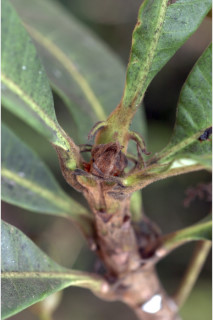
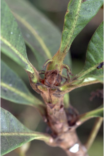
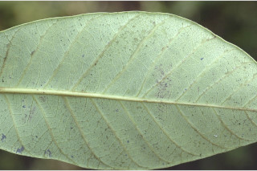
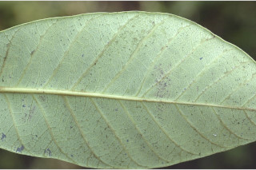
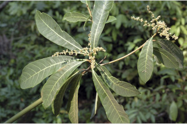
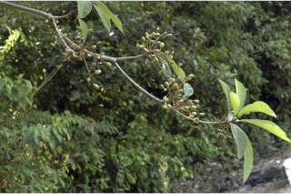
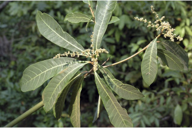
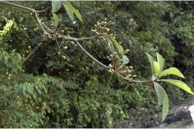

Vernacular names:
ಕನ್ನಡದ ಪ್ರಾದೇಶಿಕ ಹೆಸರು:
Vernacular names:
தமிழ் பெயர்:
Tamil: Karuncheru, Karunkarai, Karuncharai, Kattu cheru Malayalam: Cattusjeru, Cera, Charii, Charu, Cheru, Kattucher, Kattuchera, Naicheru
Kannada: Holigar, Holigeru, Hulgeri, Kadugeru, Katugeri
English: The black varnish tree
ಕಟುಗೇರು,ಕುಟಿಗೇರು,ಕೂಟಗೇರು,ಕಾಡುಗೇರು,ಹೊಲಗೇರು,ಹುಲ್ಗೇರಿ
Malayalam: കാട്ടുചേര്, ചേര, ചാരി, ചാരു, ചേര്, കാട്ടുചേര്, കാട്ടുചേര, നായിചേരു.
கருஞ்செரு, கருங்கரை, கருஞ்சாரை, காட்டுசெரு.
Images
Swipe to see more >>
Botanical descriptions:
ಸಸ್ಯದ ವೈಜ್ಞಾನಿಕ ವಿವರ:
Botanical descriptions:
மரங்களின் பண்புகள்:
Habit:
ಪ್ರಕೃತಿ :
Habit:
வளரியல்பு:
Large trees, up to 35 m tall.
35 ಮೀ. ಎತ್ತರದವರೆವಿಗೆ ಬೆಳೆಯುವ ದೊಡ್ಡ ಮರಗಳು.
35 മീറ്ററോളം ഉയരം വരുന്ന വന്മരങ്ങള്.
பெரிய மரம், 35 மீ. உயரமுடையது.
Trunk & Bark:
ಕಾಂಡ ಮತ್ತು ತೊಗಟೆ:
Trunk & Bark:
தண்டு மற்றும் மரப்பட்டை:
Bark finely fissured and pustular.
ತೊಗಟೆ ಸೂಕ್ಶ್ಮವಾಗಿ ಬಿರಿದ ಹಾಗೂ ಬೊಕ್ಕೆಗಳನ್ನುಳ್ಳ ಮೇಲ್ಮೈಯನ್ನು ಹೊಂದಿರುತ್ತದೆ.
നന്നായി വിണ്ടു കീറിയതും കുരുക്കളോട് കൂടിയതുമായ പുറംതൊലി.
மரத்தின் பட்டை மெலிதான வெடிப்புடையது மற்றும் நீர் கோர்த்தது போன்ற எழும்பிய அமைப்புடையது (புஸ்டுலார்).
Branches and Branchlets:
ಕವಲುಗಳು ಮತ್ತು ಕಿರುಕೊಂಬೆಗಳು:
Branches and Branchlets:
கிளைகள் & சிறிய நுனிக்கிளைகள்:
Branches with architecture of “Aubreville_model”; branchlets stout, terete, glabrous.
ಕವಲುಗಳು “ಆಬ್ರೆವಿಲ್ಲೆ” ಮಾದರಿಯ ವಿನ್ಯಾಸ ಹೊಂದಿದ್ದು, ಕಿರುಕೊಂಬೆಗಳು ಬಲಿಷ್ಟವಾಗಿದ್ದು, ಗುಂಡಾಕೃತಿಯಲ್ಲಿದ್ದು, ರೋಮರಹಿತವಾಗಿರುತ್ತದೆ.
`ഓബ്രവില്ല മാതൃക'യില് ക്രമീകരിച്ചിരിക്കുന്ന ശാഖകളോട് കൂടിയത്; ഉപശാഖകള് ഉറച്ചതും, ഉരുണ്ടതും അരോമിലവുമാണ്.
கிளைகள் “ஆப்ரவில் மாதிரி” முறையில் கிளைக்கும், சிறிய நுனிக்கிளைகள் தடிமனாகவும், குறுக்குவெட்டுத் தோற்றத்தில் வளையமானது, உரோமங்களற்றும் காணப்படும்.
Exudates:
ಜಿನುಗು ದ್ರವ:
Exudates:
சாறு:
Latex white turns to black.
ಸಸ್ಯರಸವು ಬೆಳ್ಳಗಿದ್ದು ನಂತರ ಕಪ್ಪಾಗುತ್ತದೆ
കറുത്തതായി മാറുന്ന വെളുത്ത സ്രവമാണിതിന്.
பால் போன்ற திரவம் பின் கருப்பு நிறத்துக்கு மாறிவிடும்.
Leaves:
ಎಲೆಗಳು:
Leaves:
இலைகள்:
Leaves simple, alternate, spiral, clustered at twig ends; petiole 0.8-2.5 cm long with a pair of spurs (nearly glabrous and sometimes caducous), planoconvex in cross section; lamina 10-25 x 2.5-7.6 cm, oblanceolate, apex obtuse to slightly acuminate, base cuneate to decurrent, margin entire, coriaceous, glabrous; midrib raised above; secondary_nerves 10-20 pairs, tertiary_nerves reticulate.
ಎಲೆಗಳು ಸರಳ, ಪರ್ಯಾಯ – ಸುತ್ತು ಜೋಡನಾ ವ್ಯವಸ್ಥೆಯಲ್ಲಿ ಕುಡಿಕೊಂಬೆಗಳ ತುದಿಯಲ್ಲಿ ಗುಂಪಾಗಿರುತ್ತವೆ.ಎಲೆತೊಟ್ಟು 0.8 ರಿಂದ 2.5 ಸೆಂ.ಮೀ. ಉದ್ದವಿದ್ದು, ಒಂದು ಜೋಡಿ ಚಾಚು-ಚೀಲವನ್ನು ಹೊಂದಿರುತ್ತದೆ( ಬಹುಮಟ್ಟಿಗೆ ರೋಮರಹಿತ, ಕೆಲವು ವೇಳೆ ಉದುರಿಹೋಗುತ್ತವೆ).ಎಲೆತೊಟ್ಟು ಅಡ್ಡಸೀಳಿದಾಗ ಸಪಾಟ ಪೀನ ಮಧ್ಯ ಆಕಾರದಲ್ಲಿರುತ್ತದೆ. ಎಲೆಪತ್ರ ಬುಗುರಿ-ಈಟಿ ಸಮ್ಮಿಶ್ರಾಕಾರದಲ್ಲಿದ್ದು 10 – 25 X2.5 -7.6 ಸೆಂ.ಮಿ. ಗಾತ್ರದಲ್ಲಿರುತ್ತವೆ. ಚೂಪಲ್ಲದ ಕೋನವುಳ್ಳ ತುದಿ ಅಥವಾ ಕ್ರಮೇಣ-ಚೂಪಾಗುವ ತುದಿ ಹಾಗೂ ಬೆಣೆಯಾಕಾರದ ಅಥವ ಕಾಂಡದವರೆವಿಗು ವಿಸ್ತಾರಗೊಳ್ಳುವ ಬುಡಭಾಗ, ನಯವಾದ ಅಂಚು,ತೊಗಲ್ಲನ್ನೋಲುವ ಮೇಲ್ಮೈ ಇದ್ದು ಪತ್ರಗಳು ರೋಮರಹಿತವಾಗಿರತ್ತವೆ. ಮಧ್ಯನಾಳಗಳು ಮೇಲುಬ್ಬರವನ್ನು ಹೊಂದಿರುತ್ತದೆ; 10ರಿಂದ 20 ಜೋಡಿ ಎರಡನೇ ದರ್ಜೆ ನಾಳಗಳಿದ್ದು ಮೂರನೇ ದರ್ಜೆ ನಾಳಗಳು ಜಾಲಬಂಧ ನಾಳ ವಿನ್ಯಾಸ ಹೊಂದಿರುತ್ತವೆ.
ഇലകള് ലഘുവും ഏകാന്തരക്രമത്തില് വര്ത്തുളമായി, ശാഖകളുടെ അറ്റത്ത് കൂട്ടമായി ക്രമീകരിച്ചിരിക്കുന്നതുമാണ്, 0.8 മുതല് 2.5 സെ.മീ. നീളമുള്ള ഇലഞെട്ട് ഒരു ജോഡി കുതിമുള്ള് പോലുള്ള നീളന് രോമത്തോട് കൂടിയതാണ് (ഇത് ഏതാണ്ട് അരോമിലവും ചിലപ്പോള് കൊഴിഞ്ഞ്വീഴുന്നതുമാണ്), ഛേദത്തില് ഒരു ഭാഗം പരന്നതും മറുഭാഗം ഉരുണ്ടുമിരിക്കുന്ന ആകൃതിയോട ്കൂടിയതാണ്; അപകുന്താകാരത്തിലുള്ള പത്രഫലകം 10 മുതല് 25 സെ.മീ. നീളവും 2.5 മുതല് 7.6 സെ.മീ. വീതിയുള്ളതുമാണ്, പത്രാഗ്രം ഉപകോണാഗ്രമോ ലഘുവായ ദീര്ഘാഗ്രമോ ആണ്, പത്രാധാരം ആപ്പിന്റെ ആകൃതിയില് നേര്ത്ത് വന്ന് തണ്ടിനെ പൊതിഞ്ഞിരിക്കുന്നതുമാണ്, അവിഭജിതമായ അരികുകളും, അരോമിലമായതും ചര്മ്മില പ്രകൃതത്തോട് കൂടിയതുമാണ്; മുഖ്യസിര മുകളില് ഉയര്ന്നു നില്ക്കുന്നതാണ്; 10 മുതല് 12 ജോഡി ദ്വിതീയ ഞരമ്പുകള്; ത്രിതീയ ഞരമ്പുകള് ജാലികാ വിന്യാസത്തിലുള്ളതാണ്.
இலைகள் தனித்தவை, மாற்றுஅடுக்கமானவை, சுழல் போன்று அமைந்தவை, நுனிக்கிளையில் இலைகள் கூட்டமாக மற்றும் நெருக்கமாகமைந்தவை; இலைக்காம்பு 0.8-2.5 செ.மீ., நீளமுடையது மற்றும் அதனுடன் ஒரு ஜோடி ஸ்பர் உடையது (உரோமங்களற்றது மற்றும் சிலசமயம் உதிரக்கூடியது), குறுக்குவெட்டுத் தோற்றத்தில் பிளேனோகான்வக்ஸ்; இலை அலகு 10-2 X 52.5-7.6 செ.மீ., தலைகீழ் ஈட்டி வடிவம் , அலகின் நுனி மழுங்கியது முதல் சிறிது அதிக்கூரியது, அலகின் தளம் ஆப்பு வடிவம் முதல் டெக்கரண்ட், அலகின் விளிம்பு முழுமையானது, கோரியேசியஸ், கீழ்பரப்பு உரோமங்களற்றது; மையநரம்பு இலையின் மேற்பரப்பைவிட உயர்ந்து காணப்படும்; இரண்டாம் நிலை நரம்புகள் 10-12 ஜோடிகள்; மூன்றாம் நிலை நரம்புகள் வலைபின்னல் அமைப்பு கொண்டது.
Inflorescence / Flower:
ಪುಷ್ಪಮಂಜರಿ/ಹೂಗಳು:
Inflorescence / Flower:
மஞ்சரி / மலர்கள்:
Inflorescence axillary or terminal panicles, 12-24 cm long, golden yellow pubescent; flowers polygamous, greenish white.
ಹೂಗಳು ಸಂಕೀರ್ಣಲಿಂಗಿ , ಹಸಿರು ಮಿಶ್ರಿತ ಬಿಳಿ ಬಣ್ಣದವುಗಳಾಗಿದ್ದು12 ರಿಂದ 24 ಸೆಂ.ಮಿ. ಉದ್ದದ,ಅಕ್ಷಾಕಂಕುಳಿನ ಅಥವಾ ತುದಿಯಲ್ಲಿರುವ ಹಳದಿ ಮೃದುತುಪ್ಪಳವನ್ನುಳ್ಳ, ಪುನರಾವೃತ್ತಿಯಾಗಿ ಕವಲೊಡೆದ ಪುಷ್ಪಮಂಜರಿಯಲ್ಲಿರುತ್ತವೆ
പൂങ്കുലകള് സ്വര്ണ്ണ-മഞ്ഞ നിറത്തിലുള്ള രോമങ്ങളോട് കൂടിയതും, 12 മുതല് 24 സെ.മീ. വരെനീളമുള്ള കക്ഷീയമോ ഉച്ചരസ്ഥമോ ആയ പാനിക്കിളുകളാണ്; പച്ച കലര്ന്ന വെളുത്ത പുഷ്പങ്ങള് ബഹുലിംഗികളാണ്.
மஞ்சரி இலைக்கோணங்களில் அல்லது தண்டின் நுனியில் அமைந்த பேனிக்கிள், 12-24 செ.மீ. நீளம், தங்க-மஞ்சள் நிறமுடைய சிறு மென்உரோமங்களானது; மலர்கள் ஒர்பாலானவை-இருபாலானவை, வெளிறிய பச்சை நிறம்.
Fruit and Seed:
ಕಾಯಿ /ಬೀಜ:
Fruit and Seed:
கனி / விதை:
Drupe, obliquely ovoid, glabrous, rounded at apex, 3 cm long, wholly enclosed in obconic hypocarp, 1-seeded.
ಡ್ರೂಪ್ ಗಳು ರೋಮರಹಿತ, ಏಕಬೀಜ ಸಹಿತವಾಗಿದ್ದು, ಓರೆಯಾದ ಅಂಡಾಕಾರದಲ್ಲಿದ್ದು ಗುಂಡಾಕಾರದ ತುದಿಯನ್ನು ಹೊಂದಿರುತ್ತದೆ. ಕಾಯಿಗಳು ಸಂಪೂರ್ಣವಾಗಿ ತಲೆಕೆಳಗಾದ ಶಂಖುವನ್ನು ಹೋಲುವ ಹೈಪೋಕಾರ್ಪ್ ನಲ್ಲಿ ಹುದುಗಿರುತ್ತದೆ.
പിന്നറ്റം ഉരുണ്ടിരിക്കുന്ന, 3 സെ.മീ. നീളം വരുന്ന, അരോമിലമായ ഫലം അപ അണ്ഡാകാരത്തോട് കൂടിയ ആഭ്രകം (ഡ്രൂപ്) ആണ്, ഒറ്റവിത്തോട്കൂടിയ ഇത് അപകോണാകാരത്തിലുള്ള പൈപാകാര്പില് മൂടിയിരിക്കുന്നു.
உள்ளோட்டுத்தசைகனி (ட்ரூப்), சாய்ந்த முட்டை வடிவம், உரோமங்களற்றது, நுனிப்பகுதி வட்டமானது 3 செ.மீ. நீளம், பூத்தண்டு கிண்ணம் கனியை முழுவதும் மூடியிருக்கும்; ஒரு விதையுள்ள கனி.
Literatures:
:
Literatures:
சான்று ஏடு:
Hooker, Fl. Brit. Ind. 2: 36. 1876; Gamble, Fl. Madras 1: 268. 1997 (re. ed); Saldanha, Fl. Karnataka 2: 204-205. 1996; Cook, Fl. Bombay 1: 279. 1902; Sasidharan, Biodiversity documentation for Kerala- Flowering Plants, part 6: 111. 2004.
Hooker, Fl. Brit. Ind. 2: 36. 1876; Gamble, Fl. Madras 1: 268. 1997 (re. ed); Saldanha, Fl. Karnataka 2: 204-205. 1996; Cook, Fl. Bombay 1: 279. 1902; Sasidharan, Biodiversity documentation for Kerala- Flowering Plants, part 6: 111. 2004.
Hooker, Fl. Brit. Ind. 2: 36. 1876; Gamble, Fl. Madras 1: 268. 1997 (re. ed); Saldanha, Fl. Karnataka 2: 204-205. 1996; Cook, Fl. Bombay 1: 279. 1902; Sasidharan, Biodiversity documentation for Kerala- Flowering Plants, part 6: 111. 2004.
 

 

 


